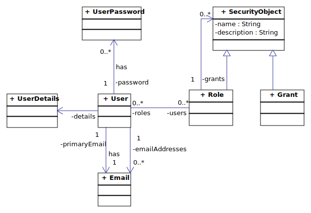

Purpose
The OpenWMS.org UAA (User Account & Administration) Service deals with the administration of Users like creating new Users, updating
properties of existing ones or deleting them. Application permissions are not directly granted to Users explicitly, but to Roles
instead. Users are assigned to Roles and application permissions were granted to particular Roles. An administration API for Roles
and permissions is especially required for a UI application.

An User has embedded UserDetails, and Emails assigned. However, the password history of the User is managed and compared against new
passwords. An User can be assigned to multiple Roles. A Role is a SecurityObject in general and has multiple Grants assigned. A
Grant is a permission that can be used in a client application.
Resources


Deployment
The UAA is an essential component for all kind of applications and requires a high degree of availability. However, it is deployed in a redundant setup in different locations, on different cloud platforms with different ISP.
| endpoints | billed | SLA |
|---|---|---|
| https://openwms-core-uaa.herokuapp.com | no | Heroku SLA for Europe region depends on AWS Europe region |
| https://uaa.demo.openwms.cloud | no | no SLA |
Build
Build a runnable fat jar with execution of all unit and in-memory database integrations:
$ mvnw package
Run the Sonar analysis:
$ mvnw package -Psonar
Run
After the binary has been built it can be started from command line. No other infrastructure services are required to run this service.
$ java -jar target/openwms-core-uaa-exec.jar
In a distributed Cloud environment the service can itself register on a central discovery service - currently Eureka is supported only. This
behavior can be enabled by activating the Spring Profile DISTRIBUTED.
$ java -jar target/openwms-core-uaa-exec.jar --spring.profiles.active=DISTRIBUTED
Now the UAA service is registered at the discovery service at startup and can be looked up by other services by its name uaa-service.
Release
$ mvn deploy -Prelease,gpg
Release Documentation
$ mvn package -DsurefireArgs=-Dspring.profiles.active=ASYNCHRONOUS,TEST -Psonar
$ mvn site scm-publish:publish-scm